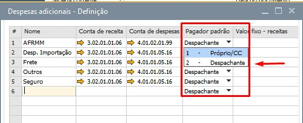
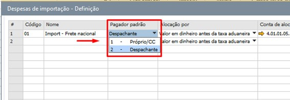
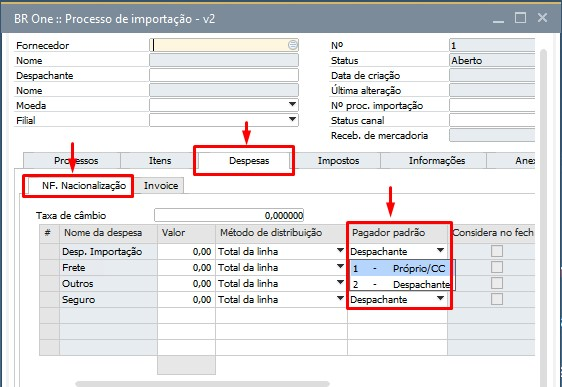
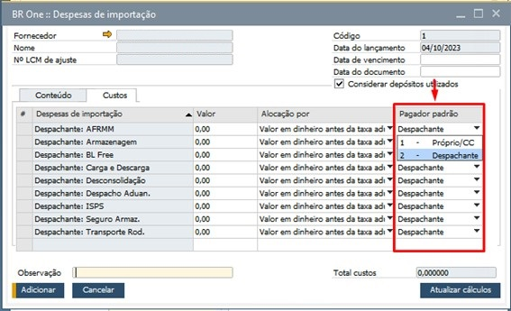
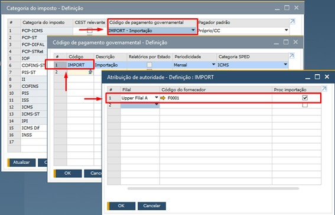
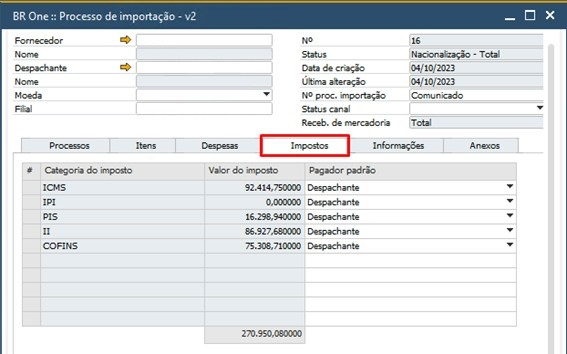
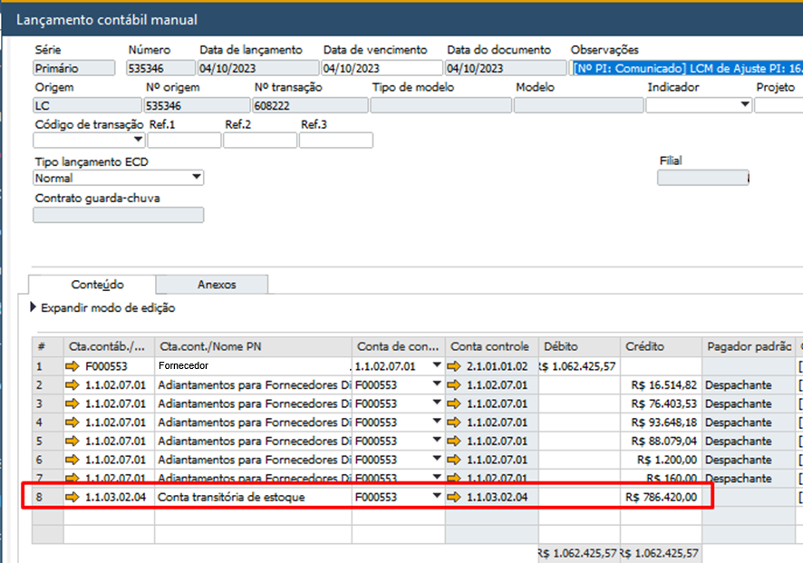

Versão 4.11.319
Melhorias
Pensando no crescimento constante do produto e de nosso módulo de importação ficamos felizes em trazer a vocês o BR One :: Importação 2.0
Nas parametrizações: incluímos a opção:
“Pagador padrão”: Podendo escolher quem será o responsável pelo pagamento das despesas:
Próprio/CC: considera a própria conta contábil configurada nas despesas;
Despachante: considera a conta contábil de adiantamento do Fornecedor Despachante do processo;
Para as “Despesas adicionais” e “Despesas de importação”:
 As opções de “Pagador padrão” para as despesas também foram inseridas no processo.
Despesas adicionais na Nacionalização.
Despesas de importação, após o recebimento de mercadoria.
“Próprio/PN”
Para configurar o PN a ser usado para a categoria de imposto, crie um código para ser usado nos processos de importação no “Código de pagamento governamental”, e informe uma filial, informe um PN e marque o parâmetro “Proc. Importação” na “Atribuição de autoridade”.
Ainda sobre Impostos, incluímos uma nova aba para que seja visualizado os impostos do processo.
Criamos duas contas contábeis a serem usadas no processo:
Conta transitória de estoque
Será usada como conta temporária nas movimentações dos saldos que envolvem as importações em andamento;
Também será usada como conta temporária para alocação das “Despesas de importação”;
Usado na tela de “Fechamento de importação”;
Conta de conciliação financeira
Será usada nos novos LCMs de “Adiantamento Fornecedor” e “INVOICE”;
Usado na tela de “Conciliação de importação”;
Agora vamos ao processo de Importação.
Nesses dois lançamentos, já realizam os débitos na “Conta de conciliação financeira”.
Na Nacionalização (Nota fiscal de entrada), não houve alterações.

No LCM gerado, para as linhas de importações em andamento (Saldo dos produtos importados), será feito crédito para a “Conta transitória de estoque”.
Nas “Despesas de importação” também iremos utilizar a “Conta transitória de estoque” para alocar os custos das despesas por pagador padrão.


Temos a partir dessa versão duas novas etapas.
Conciliação de importação

Caso haja uma diferença entre o que foi pago (Adiantamentos + INVOICE), e o que foi nacionalizado (FOB), neste momento será possível ajustar essa diferença financeira, justamente por conta da “Conta de conciliação financeira”.
Nessa etapa também será feita apuração da conta, para que não fique saldo pendentes, alocando esse saldo na “Conta transitória de estoque”.
Fechamento de importação
Na última etapa, é feita a apuração da conta “Conta transitória de estoque” podendo ajustar as diferenças de Taxa de câmbio.
Variação Cambial Ativa;
Variação Cambial Passiva;
Capitalização de item importado.
Com o item não estocável já importado, ele será vinculado a um ativo fixo já cadastrado por meio da aba BR One Capitalização.

Ao localizar o item importado e selecioná-lo no ativo fixo por meio da aba BR One capitalização os valores utilizados na nacionalização(imposto e despesas) aparecerão em tela para que o usuário selecione quais custos serão agregados ao custo de aquisição do ativo.
Note que a apresentação dos valores ocorre separadamente por área de depreciação.
Caso o usuário já tenha adicionado as despesas de importação estes valores também aparecerão para serem selecionados.

Como no SAP para capitalizar um ativo e acrescentar valores nas áreas de depreciação é necessário entrar com este ativo por meio de uma nota fiscal de entrada, o BR One capitalização também irá gerar uma Nota de entrada contendo:
Valores selecionados na área de depreciação principal serão levados para o campo Preço unitário da Nota de Entrada e posteriormente preencherá o campo Custo de aquisição e de produção da área de depreciação principal.


Valor selecionado na área de depreciação que faz controle de crédito preencherá na Nota de Entrada o imposto correspondente, e após a nota adicionada preencherá o campo Custo de aquisição e de produção da área de depreciação do imposto.

Como inicialmente o add-on gera um esboço de Nota Fiscal de Entrada o usuário pode validar os valores antes de adicionar a nota. Caso precise pode cancelar o esboço, ajustar os valores selecionados gerar um novo imposto.
Após adicionar o documento, tanto a Nota Fiscal de Entrada quanto o documento de Capitalização ficam vinculados no cadastro do ativo nos campos correspondentes dentro da aba BR One Capitalização.


Caso seja necessário cancelar a Nota Fiscal de Entrada mesmo depois de adicionada também é possível pelo botão Cancelar Capitalização no rodapé da aba BR One Capitalização.

Obs. Este documento adicionado pelo BR One terá o mesmo fornecedor e datas da nota de nacionalização onde ocorreu a importação do item não estocável vinculado ao ativo.
Como este documento gerado terá o campo Gratuito (parceiro de negócios) selecionado, fique tranquilo pois não será duplicado o faturamento para o fornecedor. Fiscalmente esta nota também não estará duplicada pois ela terá as configurações abaixo:
Nº NF: Manual
Série: Mesma série utilizada na nota de nacionalização
Modelo: Nada.